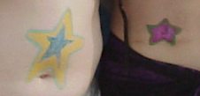
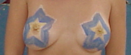
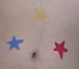

This was my second year
at
Burning Man and as the
conventional wisdom goes: the first year you wander about in awe of
the whole thing, the second year you are tremendously motivated and
undertake some outrageous project and the third year you realize that
the second year was a huge pain in the ass and opt for an easier
project with more people to share the burden. No one says what happens
in the fourth year or later, but I'll let you know when i find out.

This being my second year, I was bound and determined to do something
cool. I managed to convince Ray (a first timer) that it was worth our
while to expend the effort, so we came up with a crazy idea (Ray gets most
of the credit for that), enlisted some help and had the good fortune of
shacking up with Camp Aaargh! on the playa which provided prime
real estate on which to assemble our creation.

The crazy idea was the Star Onning Machine (apparently called the
Star On Machine in the Dr. Seuss book about the Sneetches, so we
labeled the machine accordingly but I still like the addition of the
-ing). The basic idea, if you haven't read the book, was to create a
machine into which plain-bellied sneetches entered through one door, had
stars painted on their bellies and exited as star-bellied sneetches
through the other. We had great plans to extend this idea to all sorts of
body decorating, but it turned out that the star-onning itself was the
main attraction.
In the end, the project was declared a smashing success. The jury is
out on whether or not we'll decide next year that the machine was too big
a pain in the ass to bear repeating, but early returns are that we're
going to try something even bigger and better next year. Har!